Trang chủ / Chuyên đề 7: Hồ Sơ Các Chủng Tộc / Kỳ 66
Chuyên đề 7 · Kỳ 66 / 100
LIÊN MINH CÁC ĐẤNG SÁNG LẬP (THE SEEDERS / PAA-TAAL / GUARDIANS)

Kỳ này trình bày hồ sơ sinh học của 15 chủng tộc thuộc khu vực Liên Minh Các Đấng Sáng Lập (The Seeders / Paa-Taal / Guardians). Mỗi hồ sơ gồm hình dáng, chiều cao, đặc điểm sinh học – giác quan, và vai trò trong bức tranh thiên hà.
Paa-Taal (Intergalactic Confederation — 7D)
- Hình dáng & Chiều cao: Cao 2,7m – 3,0m; mảnh khảnh, cổ dài. Da xanh lam óng ánh sắc bạc; hộp sọ dài; mắt lấp lánh như vì sao.
- Đặc điểm Sinh học & Giác quan: Ý thức 7D–12D, không phát âm thô.
- Đặc tính & Vai trò Thiên hà: Hòa bình; Cổ xưa nhất trong 24 Seeders, thiết kế 12 chuỗi DNA con người.
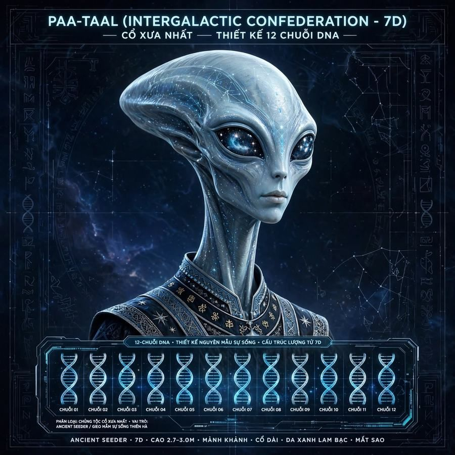
Altean (Thiên hà NGC 7331 — Pegasus / 6D)
- Hình dáng & Chiều cao: Cao 2,7m; da trắng mờ bán trong suốt, mắt xếch ngọc lam/bạc, không có lông.
- Đặc điểm Sinh học & Giác quan: Giao tiếp qua thần giao cách cảm và âm thanh siêu âm cá heo. Bậc thầy tinh thể.
- Đặc tính & Vai trò Thiên hà: Hòa bình; xây dựng văn minh Atlantis cổ đại.
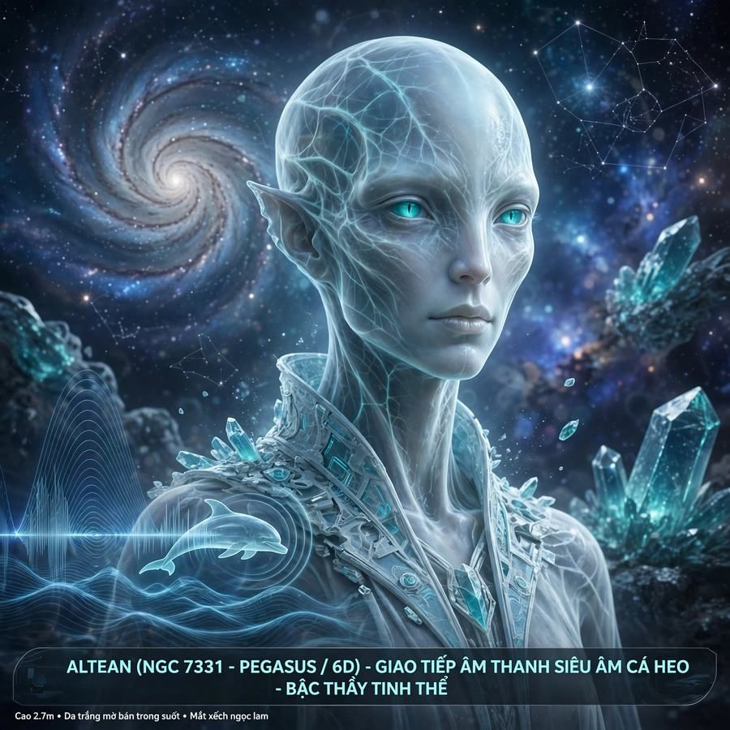
Egoni (Thiên hà UDFJ-39546284 — Fornax)
- Hình dáng & Chiều cao: Cao 2,1m – 2,3m; da trắng óng ánh, tóc vàng kim, mắt trong.
- Đặc điểm Sinh học & Giác quan: Tiết ra hương thơm tự nhiên như hoa cỏ từ làn da.
- Đặc tính & Vai trò Thiên hà: Hòa bình; du hành qua các cơn lốc năng lượng.
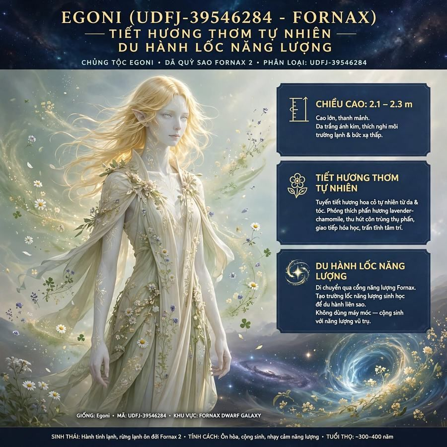
Ashai (Thiên hà NGC 1300 — Eridanus / Insectoid 7D)
- Hình dáng & Chiều cao: Côn trùng đứng thẳng cao 2,4m – 2,7m; vỏ ngoài phát quang; đầu tam giác, mắt phức hợp.
- Đặc điểm Sinh học & Giác quan: Vận hành ở mật độ 7D.
- Đặc tính & Vai trò Thiên hà: Hòa bình; gieo mầm thuộc địa Mu và Sao Hỏa cổ đại.
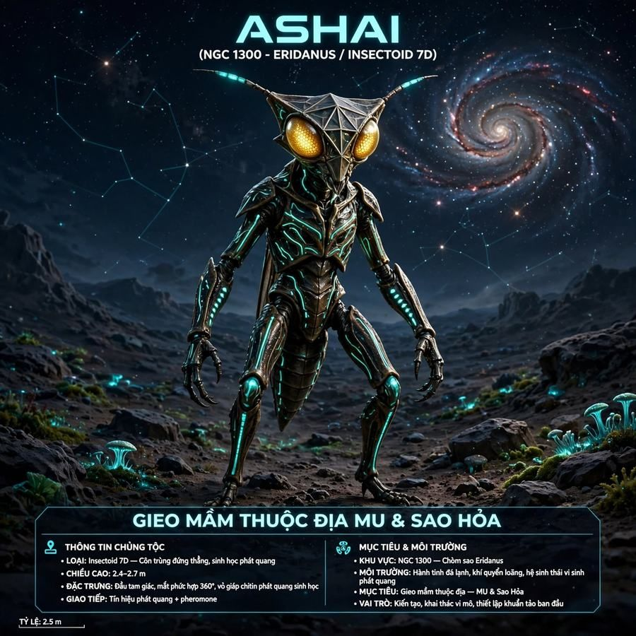
Hoovid (Thiên hà NGC 6702 — Lyra)
- Hình dáng & Chiều cao: Cao 1,2m – 1,4m; da nâu sẫm/đen, tóc xoăn.
- Đặc điểm Sinh học & Giác quan: Sở hữu 3 cực năng lượng sinh học. Tuổi thọ 50.000 – 150.000 năm.
- Đặc tính & Vai trò Thiên hà: Hòa bình; thuộc địa lòng đất Trái Đất.
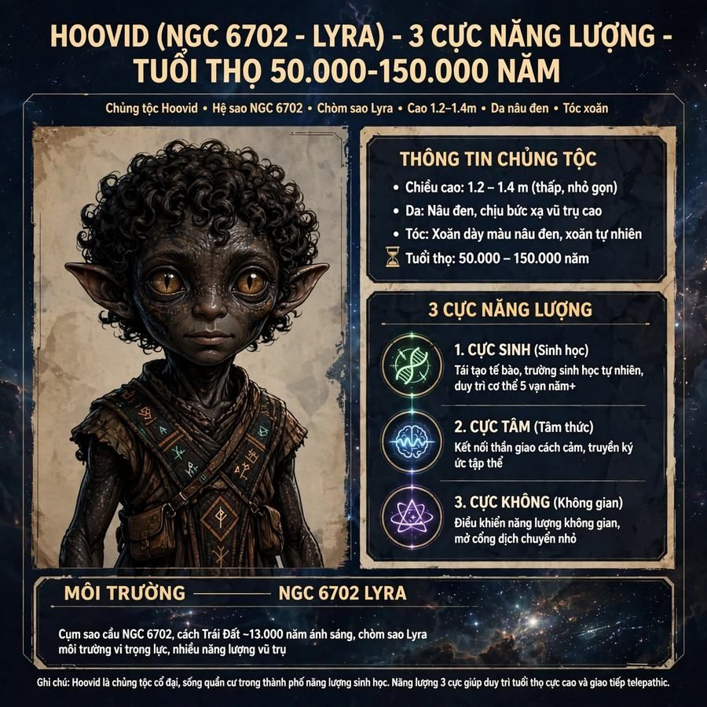
Z-Neel (Thiên hà NGC 1924 — Orion)
- Hình dáng & Chiều cao: Cao 2,5m – 2,8m; da trắng mờ như sương mù, mắt chàm sâu.
- Đặc điểm Sinh học & Giác quan: Ý thức tập thể, sinh sản phân tách tế bào lượng tử.
- Đặc tính & Vai trò Thiên hà: Hòa bình; tổ tiên gốc các chủng tộc Xám cao cấp.
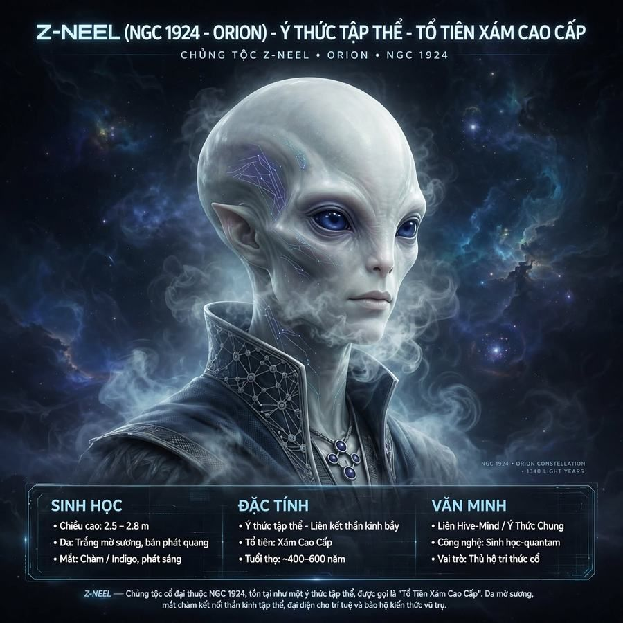
Elarth / Elarthi (Thiên hà NGC 7319 — Pegasus)
- Hình dáng & Chiều cao: Hình người khổng lồ cao 2,5m – 3,0m; sở hữu đôi cánh ánh sáng lấp lánh sau lưng. Da trắng bạc, mắt xanh kim cương.
- Đặc điểm Sinh học & Giác quan: Cấu trúc tổ chức quân sự bảo vệ Cổng Sao.
- Đặc tính & Vai trò Thiên hà: Hòa bình; nguồn gốc truyền thuyết Thiên thần.
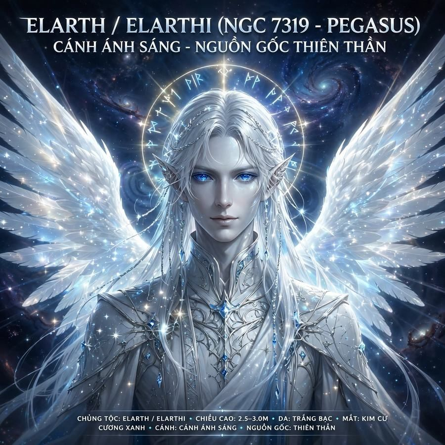
Mora-Triomme (Thiên hà NGC 6745 — Lyra)
- Hình dáng & Chiều cao: Lưỡng cư cao 2,0m – 2,3m; da xanh ngọc lam lấp lánh nước.
- Đặc điểm Sinh học & Giác quan: Thanh quản phát ra các bản thánh ca hợp âm chữa lành và mở vi cổng.
- Đặc tính & Vai trò Thiên hà: Hòa bình; giả kim thuật âm thanh.
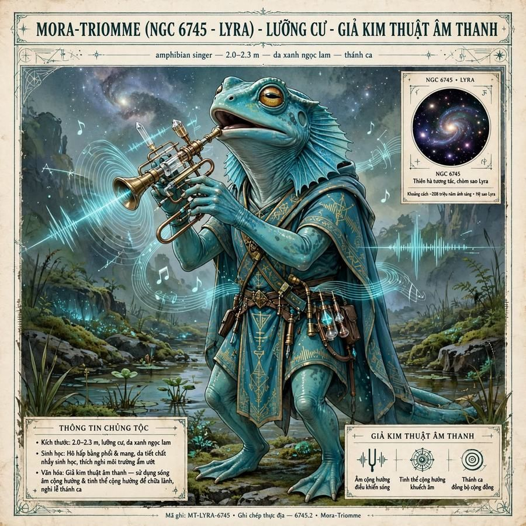
Ormong (Thiên hà NGC 7252 — Aquarius)
- Hình dáng & Chiều cao: Cao 1,8m; da nâu, mũi khoằm quý phái, mắt rất xếch.
- Đặc điểm Sinh học & Giác quan: Thần giao cách cảm và phát âm.
- Đặc tính & Vai trò Thiên hà: Hòa bình; làm việc cùng GFW Ummites tại Nam Mỹ.
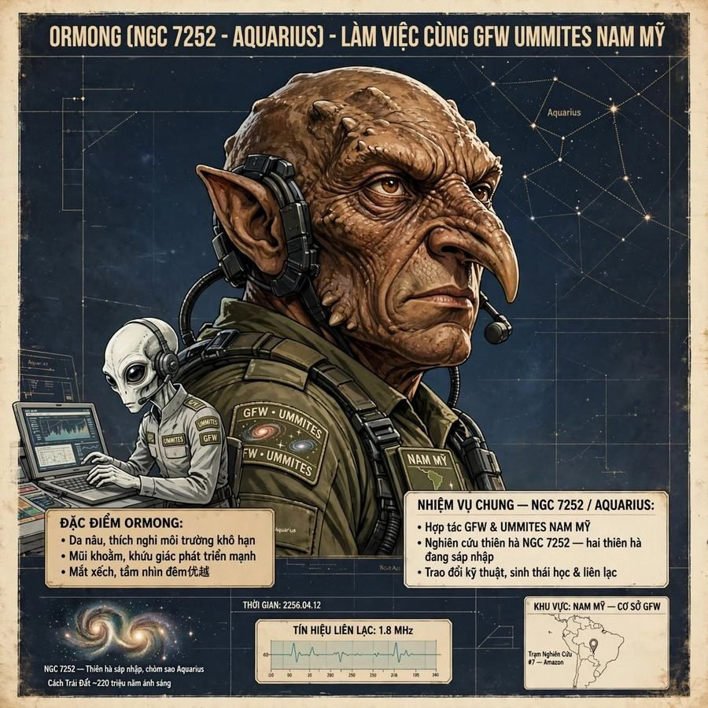
Elyan-Sukhami (Cụm Nam Thập Tự)
- Hình dáng & Chiều cao: Miêu tộc khổng lồ cao 2,6m – 3,2m; lông vàng/cam mịn, mắt hổ phách, có đuôi.
- Đặc điểm Sinh học & Giác quan: Thể lực và phản xạ siêu việt.
- Đặc tính & Vai trò Thiên hà: Hòa bình; tổ tiên sinh học chủng tộc Laan.
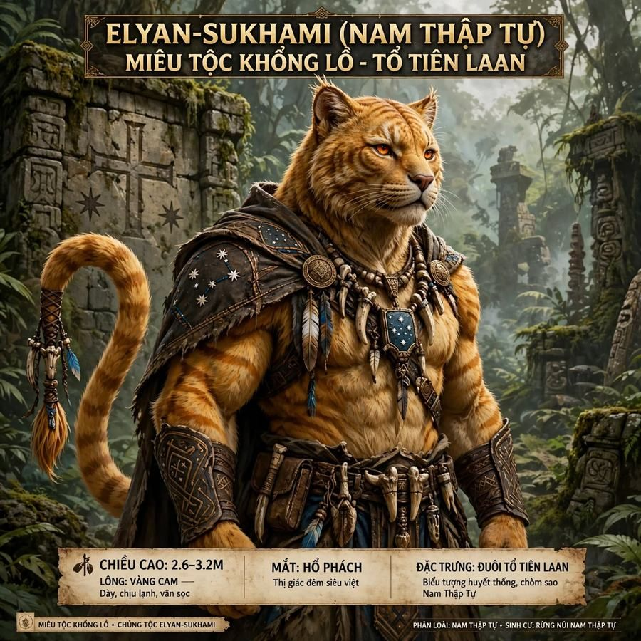
Khreg (Thiên hà NGC 3521 — Leo)
- Hình dáng & Chiều cao: Cao 2,1m – 2,4m; ngực hẹp, cổ dài. Da nâu nhăn; đỉnh hộp sọ và mắt hình chữ nhật màu xanh.
- Đặc điểm Sinh học & Giác quan: Thần giao cách cảm tuyệt đối.
- Đặc tính & Vai trò Thiên hà: Hòa bình; Seeder hình học.
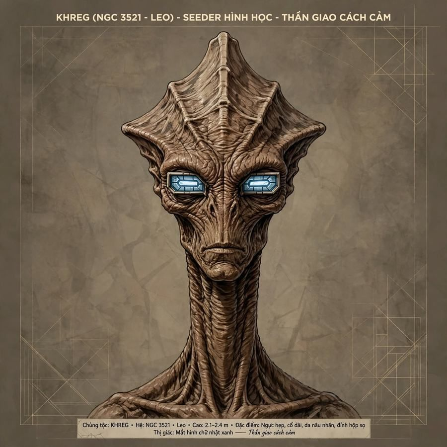
Ellii-Ym (Thiên hà NGC 7331 — Pegasus)
- Hình dáng & Chiều cao: Cao 2,3m – 2,6m; da trắng mịn, tóc vàng bạch kim, mắt xanh dương.
- Đặc điểm Sinh học & Giác quan: Mã gen chuẩn mực hình người.
- Đặc tính & Vai trò Thiên hà: Hòa bình; tổ tiên gieo mầm người Ahel tại Lyra.
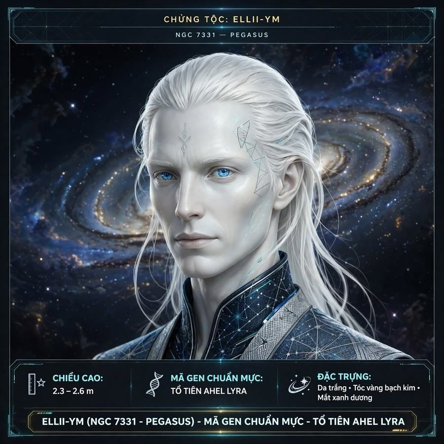
Nayal (Thiên hà Speca — 9D)
- Hình dáng & Chiều cao: Sinh mệnh bạch tuộc phát quang cao 3,0m, bán trong suốt.
- Đặc điểm Sinh học & Giác quan: Mật độ 9D, phi carbon.
- Đặc tính & Vai trò Thiên hà: Hòa bình; Seeder phi hình người.
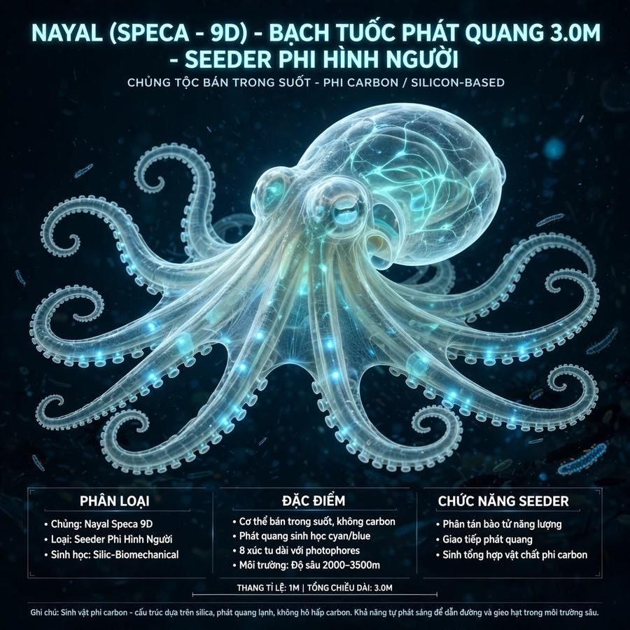
Meroa-Astamar (Thiên hà Speca)
- Hình dáng & Chiều cao: Khổng lồ cao 3,0m; da màu bạc lấp lánh, trán rất cao.
- Đặc điểm Sinh học & Giác quan: Thần giao cách cảm tuyệt đối.
- Đặc tính & Vai trò Thiên hà: Hòa bình; Seeder da bạc.
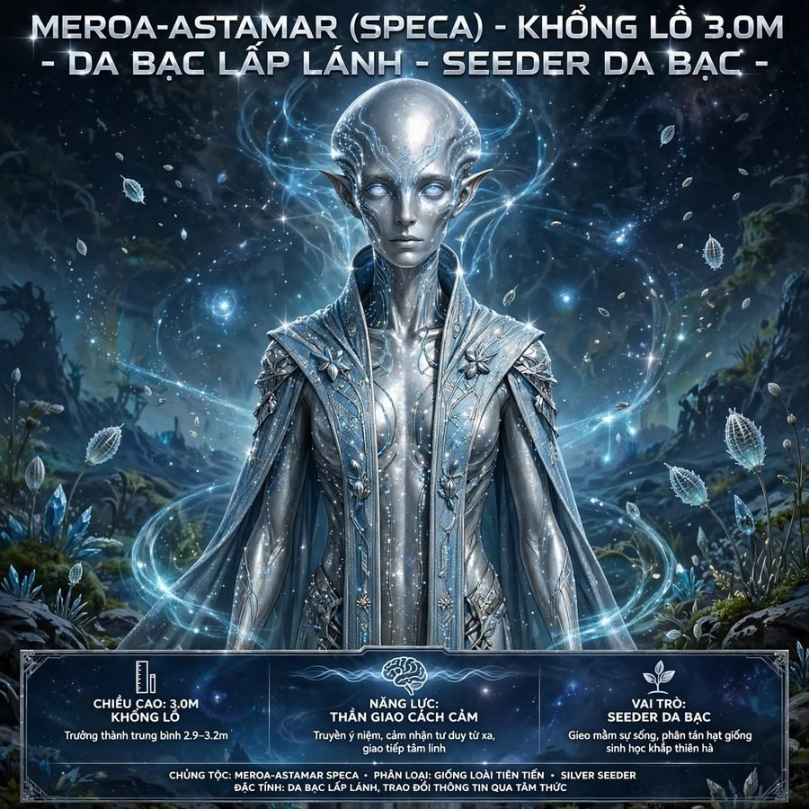
Oyora-Maruu (Thiên hà Perseus Cluster)
- Hình dáng & Chiều cao: Cao 2,1m; da xanh lam mờ, tóc đen/xám, mắt trong.
- Đặc điểm Sinh học & Giác quan: Mã gen thích nghi bức xạ.
- Đặc tính & Vai trò Thiên hà: Hòa bình; tổ tiên gieo mầm người Taal tại Lyra.
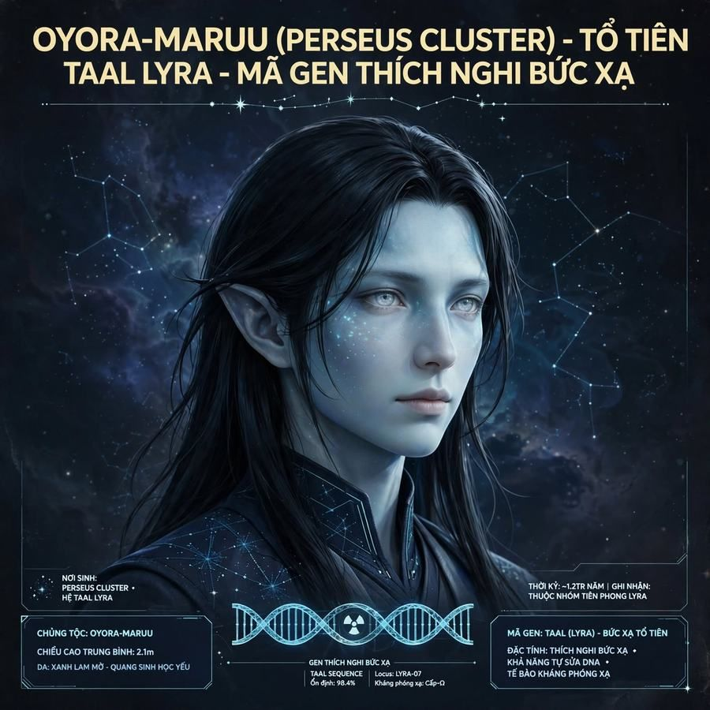